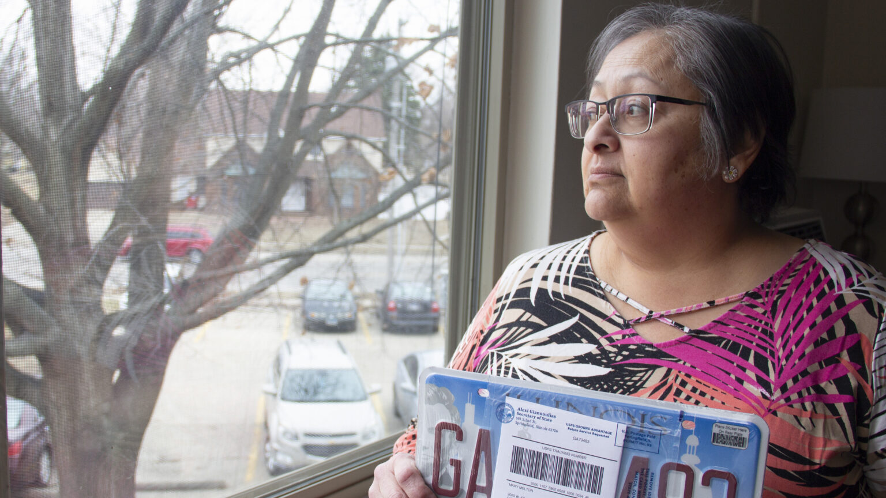
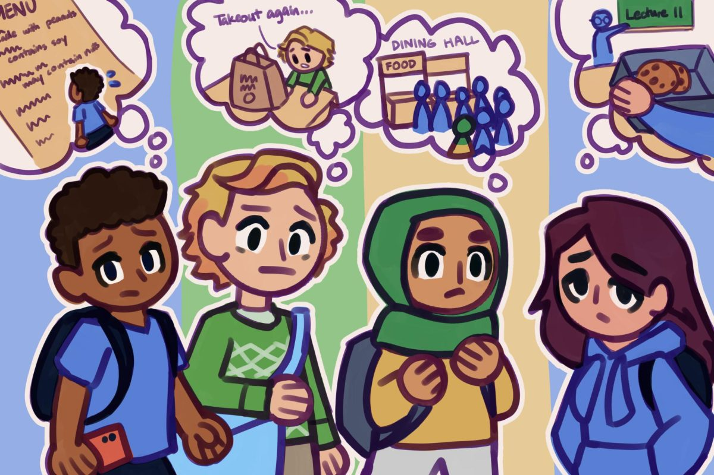

Journalism Reporting
I report across three outlets in the Champaign-Urbana area — a student daily, a watchdog investigative newsroom, and an NPR-affiliated public radio station — drawn to the kind of stories that take time to tell. Whether covering housing pressures, federal funding cuts, or community mental health, I tend toward feature and in-depth reporting that keeps social justice at the center. More recently, I've been folding data analysis and multimedia production into my work as ways to make complex systems legible to readers.

